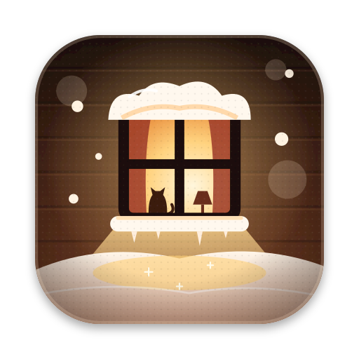

Снег собирается на верхних краях окон, на Dock и панели задач, повторяя их скруглённые углы.
Дёрни окно, и снег с него соскользнёт, а сосульки слетят и разобьются. Закрой или сверни окно, и снег упадёт в сугроб ниже.
Для macOS и Windows · бесплатно
Тёплый снег падает по экрану, оседает на окнах, Dock и панели задач, растит сосульки и разлетается от курсора.
macOS 14+, Apple Silicon и Intel · Windows 10 и 11 · открытый код
Попробуй: проведи курсором по сугробу
На твоих окнах
Снег собирается на верхних краях окон, на Dock и панели задач, повторяя их скруглённые углы.
Дёрни окно, и снег с него соскользнёт, а сосульки слетят и разобьются. Закрой или сверни окно, и снег упадёт в сугроб ниже.
Что умеет
У каждой снежинки свой темп и лёгкое покачивание. Пять видов снегопада, от лёгкого до метели.
Копится естественным откосом внизу экрана, на каждом окне, на Dock и панели задач.
Проведи курсором по сугробу, и он расступится брызгами. Дёрни окно, и снег соскользнёт.
Под окнами со снегом растут сосульки. Дёрни, закрой или сверни окно, и они разобьются.
Активное окно светится тёплым светом, как окно на иконке, и снег рядом теплеет.
Включи микрофон и подуй на экран: снег разлетится. Ничего не записывается.
Ветер, камин или оба сразу. Звук синтезируется на лету, громкость в меню.
С таянием сугроб медленно оттаивает и никогда не заваливает экран целиком.
На созвонах снег и звук плавно исчезают. На скриншотах его нет, если не попросить.
На батарее и в энергосбережении рисует скромнее. Обновляется сам и ждёт конца созвона.

Snowpuff живёт в строке меню или в трее и обновляется сам.
Открой Snowpuff.dmg и запусти Snowpuff, он сам переедет в «Программы». Приложение не подписано сертификатом Apple, поэтому при первом запуске открой «Системные настройки → Конфиденциальность и безопасность» и нажми «Всё равно открыть».
Запусти Snowpuff-Setup.exe, права администратора не нужны. Если SmartScreen предупредит о неизвестном издателе, нажми «Подробнее → Выполнить в любом случае».